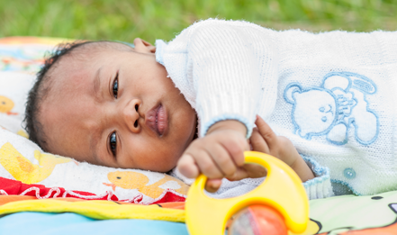

besoin de votre aide !
Pathologie : PCA
(Persistance du Canal Artériel)
coût de l'opération : 4 000 €
Toky, petit garçon malgache de 5 mois et demi, vit à Tananarive avec ses parents. Depuis sa naissance, il enchaîne les problèmes de santé. À seulement 2 mois, il a subi sa première intervention chirurgicale pour opérer une hernie située au niveau de l’aine. Sa maman a par ailleurs constaté qu’il transpirait beaucoup lors de la tétée et qu’il n’arrivait pas à prendre du poids. Alors qu’il souffre d’une forte fièvre, le Dr Nivo, notre référente médicale sur place diagnostique une grave malformation cardiaque : la persistance du canal artériel.

Ce canal est indispensable à la vie du fœtus qui respire par l’intermédiaire de la mère. Mais, juste après la naissance, dès le premier cri de l’enfant, il doit se fermer. Or chez Toky, il est resté ouvert : le sang emprunte la mauvaise voie et inonde les poumons. Cette anomalie n’est pas compatible avec la vie et Toky est en danger. Heureusement, une opération chirurgicale à cœur ouvert peut sauver Toky.
Offrons à Toky l’opération qui lui sauvera la vie
Les parents de Toky n’ont pas les moyens de financer une telle opération, et ne peuvent donc pas sauver leur fils. Mais ensemble, nous pouvons répondre à leur souhait le plus cher : libérer Toky de cette malformation et lui offrir la vie.
Offrons à Toky cette opération vitale !